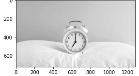
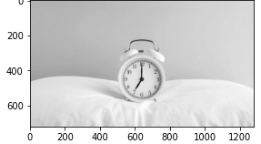
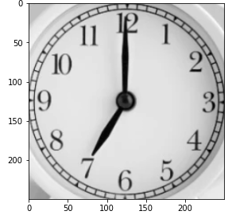
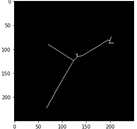
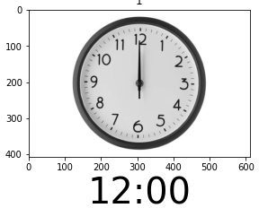

Final project by
Alon Arbel & Gev Keren
alonar96@gmail.com | gevkeren@gmail.com
With the development of the world, fewer and fewer people encounter analog clocks in their lives. As a result, fewer and fewer people know what they are and how to read the time.
Reading the time of an analog clock is still highly important and relevant, and doing so automatically can improve several aspects of our lives.
Our goal is to calculate the time efficeintly and accurately out of an image, using computational vision methods.
Our implementation has 6 steps:
Reading an image and converting it to a grayscale representation.
Detecting the clock's frame out of the image using cv2.HoughCircles method.
cv2.HoughCircles method uses Canny's edge detection algorithm in its process.
Cropping the image around the detected clock in order to screen other objects from the picture and centralize the clock.
Resizing the clock to a uniform size (250x250). The uniform size helps us find a uniform threshold for the later steps.
Using the cv2.threshold method we convert the image to a binary image on which we apply the
cv2.findContours method in order to find its contours.
Those contours are then screened by their area, and we extract the hands contours of the clock.
The hands are than being represented by lines using the cv2.HoughLinesP method.
Centralizing the detected lines (hands) to the clock's center, screening them by angle and sorting them by length.
Based on the number of lines we classify the line role (Hours, minutes or seconds).
Besaed on the number of detected hands, we apply the appropriate calculation and return the time in a HH:MM:SS or HH:MM format.
The image:
Image processing:

Clock detection:


Cropping & Resizing the image:

Hands Detection:

Hands Filter and classification:
Time calculation:

1. Wall, hand & pocket clocks.
2. Clocks with 2 or 3 hands.
3. Clocks with one hand above the other.
4. Clocks that are in the background of the image, which consists of other objects as well.
5. Different sizes of clocks.
6. Different sizes of images.
7. Clocks with or without numbers.
The attempt to read an analog clock from an image was successfull.
There are still several features that can be added in order to improve the app: